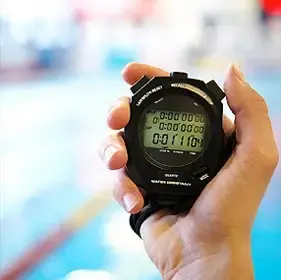
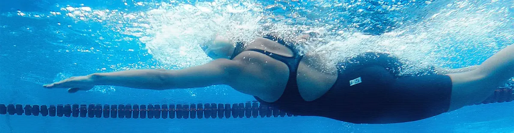
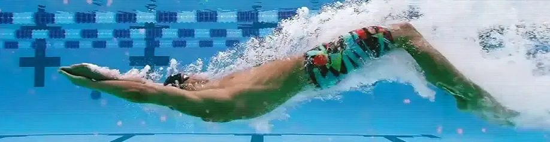

Персональные тренировки по плаванию
Для любого уровня подготовки
Новые тренировки каждый день!
Почему «PLAVRUK»?
«PLAVRUK» это персонализированные планы тренировок по плаванию от начинающих до продвинутых пловцов
Итак, Вы решили заниматься плаванием, и у Вас есть возможность посещать бассейн.
Теперь Вам понадобится индивидуальная программа тренировок по плаванию в бассейне, разработанная специально для Вас. Иначе, Вы будете просто приходить и плавать от бортика до бортика, что вскоре Вам наскучит, и Вы не сможете достигнуть желаемых спортивных или оздоровительных целей.
Идеальное решение для Вас – «Плаврук»!
Наш уникальный ресурс будет вашим бюджетным, безотказным и понимающим персональным интерактивным тренером, который будет заботиться о том, чтобы ваши тренировки по плаванию в бассейне стали не только результативными, но и увлекательными и разнообразными!
«Плаврук» всегда поймет, если Вы устали, заболели или пошли в кино; и будет четко отслеживать Ваш прогресс и радоваться Вашим успехам!
Вы будете не только чувствовать, но и видеть результат, что даст Вам еще более сильную мотивацию, чтобы снова и снова приходить в бассейн! Вы будете плавать дальше, Вы улучшите свою технику плавания, Вы будете плавать более эффективно, и Вам понравится время, проведенное в бассейне.
Попробуйте! Просто зарегистрируйтесь, и «Плаврук» совершенно бесплатно создаст для Вас Вашу первую индивидуальную тренировку с учетом Ваших способностей и целей!
мы проплыли


метров
Проплывем вокруг Земли!?
Длина экватора нашей планеты составляет 40 075 696 метров.
С чего начать?
Это просто!

Это действительно просто!Зарегистрируйтесь, это займет несколько секунд.
После регистрации, на указанный Вами е-mail, система направит пароль для входа в личный кабинет. Войдите в личный кабинет и настройте Ваш профиль в соответствии с Вашими предпочтениями, для получения максимально точного индивидуального плана тренировок по плаванию.
«Плаврук» предоставляет Вам возможность получать ежедневно, одну новую тренировку совершенно бесплатно!
Вам доступен полный функционал системных индивидуальных настроек ресурса «Плаврук», а также весь перечень уникальных услуг, включая:
- возможность получения индивидуальных тренировок по плаванию каждый день
- возможность использовать в тренировках аксессуары для плавания
- возможность включать в тренировку упражнения на технику плавания
- возможность выбора различных стилей плавания в процессе тренировки
- возможность выбора вашей специализации в плавании
Все тренировки бесплатно! Никаких скрытых или дополнительных платежей!

Тренировки
Тренируйтесь регулярно — каждая новая тренировка — большой шаг к вашей цели!
Плавание — это здорово!
Не имеет значения, начинающий Вы пловец или профессионал; решили ли Вы плавать, чтобы сбросить лишний вес или просто для поддержания тонуса.
Выбирая «Плаврук», Вы поступаете правильно!
Плавание — это действительно наиболее эффективный способ сжигания калорий, развития мускулатуры, укрепления сердечно-сосудистой системы, снятия лишней нагрузки с позвоночника, повышения настроения и борьбы со стрессами!
Занятия с «Плавруком» сделают Ваши тренировки целенаправленными и разнообразными, помогут Вам повысить выносливость, работоспособность и поднять настроение.
Мы очень рекомендуем Вам включать в программу тренировок упражнения на технику плавания и уделять им особое внимание, так как правильное и техничное плавание поможет Вам быстрее достичь поставленных целей. Если Вы только начинаете плавать, советуем Вам посмотреть видео-уроки по технике плавания в Интернет и обязательно взять несколько уроков плавания с тренером в бассейне для правильной постановки техники плавания.

Важно!
Перед началом тренировок с «Плавруком», пожалуйста, убедитесь, что у Вас нет противопоказаний для занятий плаванием!
Обязательно внимательно прочтите раздел Пользовательского соглашения, касающийся Вашего здоровья и самочувствия! Будьте внимательны к своему здоровью, оценивайте свои силы объективно. Помните, что Вы занимаетесь плаванием для поддержания здоровья!
Если раньше Вы никогда регулярно не занимались спортом, или у Вас был большой перерыв в тренировках, перед началом занятий с «Плавруком» обязательно проконсультируйтесь с врачом.